Baumdiagramm
Mit einem KI-Tutor lernen
Ein KI-Tutor erklärt dir diese Seite und hilft dir bei den Übungen. Wähl deinen Assistenten:
Mit Claude öffnen Mit ChatGPT öffnen Mit Mistral Vibe öffnen
Du nutzt dein eigenes Konto beim Anbieter. Der Assistent ist kein Angebot von lernapps.net: lernapps liefert nur Inhalte und Übungen. Die Wahl gilt für alle Seiten, nur auf diesem Gerät.
Warum?
Sobald du zweimal ziehst, wirfst oder würfelst, wird es unübersichtlich: Was kann beim ersten Mal passieren, was danach? Das Baumdiagramm ordnet alle Möglichkeiten Stufe für Stufe. Mit einem sauberen Baum lösen sich die Pfadregeln fast von allein – ohne Baum verliert man schnell einen Fall.
Regel
- mehrstufiger Zufallsversuch
Ein Zufallsversuch aus mehreren Zügen (Stufen), zum Beispiel zweimal aus einer Urne ziehen oder dreimal eine Münze werfen.
Für jede Stufe zeichnest du Zweige zu allen möglichen Ergebnissen.
- An jeden Zweig schreibst du seine Wahrscheinlichkeit (Laplace: günstig durch möglich).
- Die Zweige an einem Knoten ergeben zusammen immer 1.
- Reihenfolge beim Zeichnen: erst alle Zweige, dann die Kugeln, dann die Brüche.
- Ohne Zurücklegen ändern sich ab der zweiten Stufe Zähler und Nenner (mehr dazu unter Ohne Zurücklegen).
- Pfad
Ein Weg im Baumdiagramm vom Start bis zu einem Ende.
Beispiel
Zweimal ziehen ohne Zurücklegen
In einer Urne liegen 3 rote und 2 blaue Kugeln. Du ziehst zweimal ohne Zurücklegen. Das Bild unten zeigt den fertigen Baum.
- 1. Stufe: 5 Kugeln. , . Zusammen 1.
- 2. Stufe nach rot: nur noch 4 Kugeln, davon 2 rote. , .
- 2. Stufe nach blau: 4 Kugeln, 3 rote, 1 blaue. , .
- Unter den Enden stehen schon die Pfadwahrscheinlichkeiten (siehe 1. Pfadregel). Ihre Summe ist 1 – ein guter Test für jeden Baum.
Bild

Ein Baumdiagramm zur Urne mit 3 roten (R) und 2 blauen (B) Kugeln, zweimal ohne Zurücklegen. Vom Start gehen zwei Zweige aus: rot mit 3/5 und blau mit 2/5. Nach rot folgen rot mit 2/4 und blau mit 2/4, nach blau folgen rot mit 3/4 und blau mit 1/4. Unter den vier Enden stehen die Pfadwahrscheinlichkeiten: rot-rot 3/10, rot-blau 3/10, blau-rot 3/10, blau-blau 1/10. Zusammen ergeben sie 1.
Quelle: Eigene Darstellung der Mathe-Karte. Lizenz: MIT.Video dazu
Beim Abspielen gehen Daten an YouTube/Google, darunter deine IP-Adresse.
- Noch eine Erklärung: Mehrstufige Zufallsexperimente bei serlo.org
Übung
Aufgabe Nr. 1
Aufgabe Nr. 1
Du wirfst eine Münze zweimal. Im Baumdiagramm fehlen 3 Zweigwahrscheinlichkeiten (a, b, c). Trag sie ein. Das Bild zeigt den Baum; an den fehlenden Zweigen steht „?“ und ihr Buchstabe.
- a) 2. Wurf: Kopf (nach Kopf) = …
- b) 1. Wurf: Zahl = …
- c) 2. Wurf: Zahl (nach Zahl) = …
Lösung
a) 2. Wurf: Kopf (nach Kopf): 1 von 2 → 1/2
b) 1. Wurf: Zahl: 1 von 2 → 1/2
c) 2. Wurf: Zahl (nach Zahl): 1 von 2 → 1/2
Übung
Drei Beispielaufgaben, jede mit ihrer Lösung:
Aufgabe Nr. 1
In einer Urne liegen 4 rote und 5 blaue Kugeln. Du ziehst zweimal ohne Zurücklegen. Welcher Nenner steht an den Zweigen der zweiten Stufe?
Tipp
Wie viele Kugeln liegen noch in der Urne, nachdem du eine gezogen hast?
Lösung
- Am Anfang liegen 4 + 5 Kugeln in der Urne.
- Nach dem ersten Zug fehlt eine Kugel: Der Nenner der zweiten Stufe ist 8.
Richtige Antwort: 8
Aufgabe Nr. 2
In einer Urne liegen 2 rote und 2 blaue Kugeln. Du ziehst zweimal ohne Zurücklegen. Welcher Nenner steht an den Zweigen der zweiten Stufe?
Tipp
Wie viele Kugeln liegen noch in der Urne, nachdem du eine gezogen hast?
Lösung
- Am Anfang liegen 2 + 2 Kugeln in der Urne.
- Nach dem ersten Zug fehlt eine Kugel: Der Nenner der zweiten Stufe ist 3.
Richtige Antwort: 3
Aufgabe Nr. 3
In einer Urne liegen 3 rote und 5 blaue Kugeln. Du ziehst zweimal ohne Zurücklegen. Welcher Nenner steht an den Zweigen der zweiten Stufe?
Tipp
Wie viele Kugeln liegen noch in der Urne, nachdem du eine gezogen hast?
Lösung
- Am Anfang liegen 3 + 5 Kugeln in der Urne.
- Nach dem ersten Zug fehlt eine Kugel: Der Nenner der zweiten Stufe ist 7.
Richtige Antwort: 7